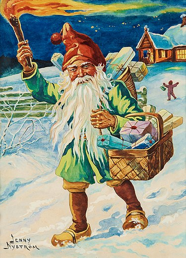
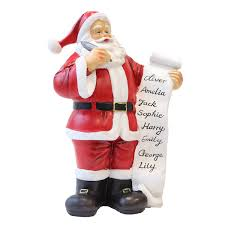

Jultomten, tomten eller, på finlandssvenska, julgubben (främst i södra Finland), är en figur som kommer med julklappar i juletid. Han avbildas ofta som en överviktig äldre man med röd luva och långt vitt skägg. Jultomten har utvecklats ur flera olika figurer, bland annat Sankt Nikolaus, Rupert knekt och den nordiska tomtegubben.
Dagens jultomte är en kombination av traditionella berättelser, mytiska figurer, verkliga personer, samtida berättelser och reklam. Under olika perioder och på olika platser har jultomten framställts på olika sätt och haft olika karaktärsdrag. Än idag skiljer sig uppfattningen om jultomten på olika platser beroende på vilka traditionella föreställningar som dominerar, men det sker en homogenisering genom att vissa bilder och personlighetsdrag reproduceras globalt av exempelvis multinationella företag som Coca-Cola och Disney.
  Källa